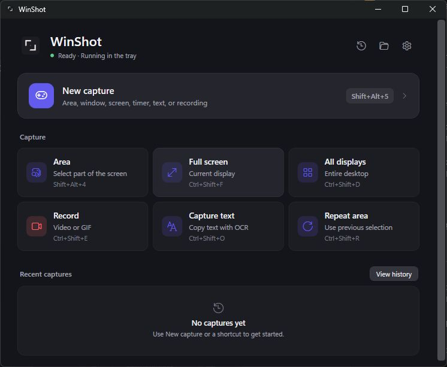

Windows desktop application · One-time license planned · Windows OCR

Current development build · synthetic empty history
The workflow
One shortcut. A complete workflow.
From the first selection to the final file, every step stays close and deliberate.
01Capture
Choose an area, screen, display, text, or recording from one compact surface.
02Quick access
Copy, save, annotate, pin, or dismiss without hunting through folders.
03Refine
Crop and mark up images, or trim a recording to what matters.
04Deliver
Move the result to your clipboard, a local file, or another app.
Capture
Capture without breaking focus.
Area, full screen, every display, and OCR are available from one quiet dashboard or global shortcuts. Recording is implemented and remains in packaged hardware validation.
Area and full-screen capture
All-display capture
Text capture with Windows OCR
Video and GIF recording in release validation
Refine
Refine only what matters.
Open a capture in the editor to crop, annotate, obscure sensitive details, and prepare it for its destination.
Editor behavior is implemented; final release validation remains in progress.
Conceptual layout · real editor media follows release validation
Deliver
Ready the moment you finish.
Copy to the clipboard, save to a local file, drag into another app, revisit recent image captures, or pin a reference above your workspace.
01Clipboard
Paste into the conversation or document already in front of you.
02Local file
Keep control of where the result is stored.
03Recent history
Return to recent image captures from inside the app.
04Pin
Keep a visual reference above other windows.
Privacy and control
Local behavior, described precisely.
The current capture and OCR implementation processes selected pixels on your Windows device. When enabled, recent image history uses bounded local backing files. Core capture does not require a Relic Screenshot account.
On your device
Capture→OCR→Clipboard→Folder
On-device capture
Screenshots and OCR are processed locally as part of the capture workflow.
Local history
You choose the save location; enabled history and clipboard workflows also use bounded local backing files.
No account for core capture
Capture, OCR, and local history do not depend on a Relic Screenshot account.
A folder you choose may itself be cloud-synced. Purchase activation and update checks may contact their providers when those release services are configured; capture content is not required for those interactions.
The offer
Try the complete workflow.
14
14-day trial
Evaluate the application before purchasing.
1×
One-time license
Price, device allowance, updates, and refund terms will be confirmed before launch.
Pre-release status: public download opens only after the installer is packaged, signed, and passes clean install, update, and uninstall validation.
FAQ
Questions, answered plainly.
What happens after the trial?
The application currently implements a 14-day evaluation. Final purchase, expiry, and recovery language will be published with the approved commercial terms.
Does the app need an account?
No account is required for core capture, OCR, or local history. A license provider may be used to activate purchases when production licensing is configured.
Where are captures stored?
Saved captures use the location you choose. When enabled, recent-history and clipboard workflows also use bounded local backing files; a chosen folder may itself be cloud-synced.
Which Windows versions are supported?
The current application is a 64-bit Windows desktop build. The exact minimum and fully tested Windows versions will be published after packaged compatibility validation.
How will licensing work?
A one-time-license model is planned. Exact pricing, activation limits, paid-upgrade policy, and offline behavior are still being finalized.
Are license transfers finalized?
That workflow depends on the final provider and device policy. We will publish the exact process before purchases open.